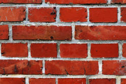
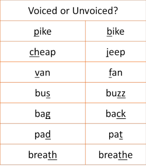

Consonants
 |
| Ssshhh! |
|  |
The 'hard' sounds of English |
Now that you know what a phoneme actually is, we can look at the
first main category: consonants. Consonants are the hard
sounds of English. If we only have the consonants in a phrase
we can still understand the phrase because the consonant sounds
carry the most meaning.
For example, try to understand this:
r y cmng t th prty?
If we put the other letters back, we get: Are you coming to the party?
When you produce a sound by completely or partially blocking the air flow, you produce a consonant. For example, if you block and then release air through pressing your lips together, you will produce the sound /p/. Leave your lips open and you simply make an 'ee' sound, if you make any sound at all.
In English, 21 letters of the alphabet represent consonants: B, C, D,
F, G, H, J, K, L, M, N, P, Q, R, S, T, V, X, Z, and usually W and Y.
However, English spelling is not a good guide to English
pronunciation and there are, in fact, 24 consonant sounds. If
you take
the
course in transcribing sounds on this site (new tab), you will discover
what they all are. For now, we need to look at two ways to
pronounce consonants.
Voiced and unvoiced consonants |
Put your hand on your throat and say this:
SSSSSSSSSSSSSSZZZZZZZZZZZZZZZZZZZSSSSSSSSSSSSSSSSSSSSZZZZZZZZZZZZZZZZ
What did you feel? Try again and then click here when you have an answer.
When you said SSSSSSSSSSSSS, you probably felt nothing but when you said ZZZZZZZZZZZZZZZ, you felt your throat vibrate. If you didn't, try again.
The difference is the sound represented by Z is voiced and the sound represented by S is unvoiced. Now try saying this and think about where your tongue is in your mouth.
sue zoo sue zoo sue zoo sue zoo sue zoo sue zoo sue zoo sue zoo sue zoo sue
Click here when you have done that.
You can
hear the different sounds of the 's' and the 'z' but notice that
your tongue stays in the same place for both sounds. The only
difference is that with zoo you add your
voice and with sue, you don't.
The words are minimal pairs in English, distinguished by voicing
alone.
There are some pairs of voiced and unvoiced consonants in
English in this list. Can you identify which ones are voiced
and which ones are unvoiced? Try the hand-on-throat trick.
Click on the table when you have your answer.

In English, whether a sound is voiced or unvoiced is very important because, as you can see, the act of adding voice to a consonant makes it change its significance. Voicing and not voicing are phonemic differences in English but not so in many other languages.
Be aware that letters and sounds are not the same thing. For example, in the word letting in English there are only three consonant sounds (l, tt and ng) although there are five consonant letters (l, t, t, n and g).
Here is a list of all the consonant sounds in English with their transcription:
| /p/ | peach | /b/ | bang | /t/ | top |
| /d/ | do | /k/ | cough | /ɡ/ | good |
| /tʃ/ | chair | /dʒ/ | jumper | /f/ | food |
| /v/ | value | /θ/ | path | /ð/ | the |
| /s/ | sack | /z/ | zoo | /ʃ/ | sugar |
| /ʒ/ | leisure | /h/ | happy | /m/ | man |
| /n/ | nice | /ŋ/ | ring | /l/ | love |
| /r/ | roll | /j/ | yacht | /w/ | war |
 |
Learn more about: |
 |
Take a test |
To make sure you have understood so far, try
a very short test of your
knowledge of consonants.
Use the 'Back' button to return when you have done that.
If you got that all right, it is safe to move on.
The next area to learn about is Vowels. Click here to go to that section.